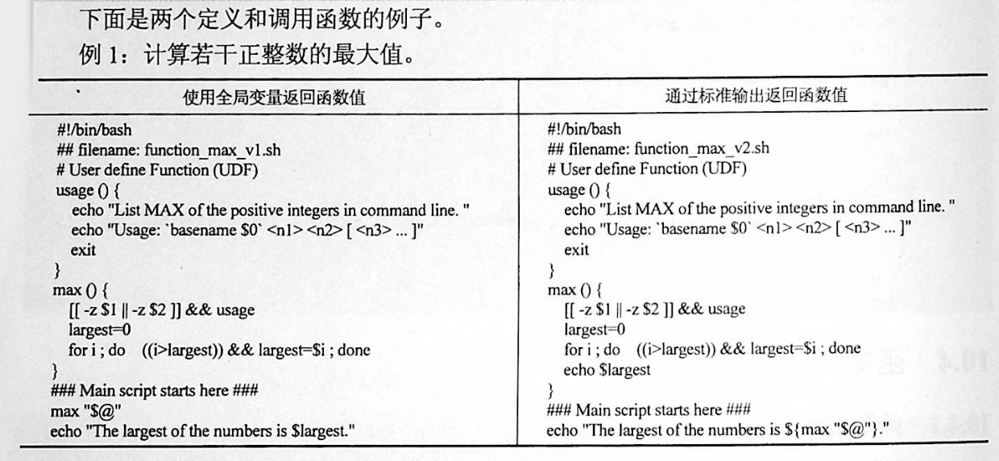

Contents
3.5. 5 函数¶
3.5.1. 1 概念¶
linux shell 可以用户定义函数，然后在shell脚本中可以随便调用,以此来重复调用公共函数，减少代码量。
3.5.2. 2 格式¶
[ function ] funname()
{
action;
[return int;]
}
两种形式
function_name ()
{
statement1
statement2
...
statement n
}
或者
function function_name ()
{
statement1
statement2
...
statement n
}
说明：
- function 关键字可写，也可不写。
- 参数返回，可以显示加：return返回，如果不加，将以最后一条命令运行结果，作为返回值。
- return后跟数值n(0-255）
- 函数返回值只能是整形数值，一般是用来表示函数执行成功与否的，0表示成功，其他值表示失败。 因而用函数返回值来返回函数执行结果是不合适的。如果要硬生生地return某个计算结果，比如一个字符串，往往会得到错误提示：“numeric argument required”。
- 如果一定要让函数返回一个或多个值，可以定义全局变量，函数将计算结果赋给全局变量，然后脚本中其他地方通过访问全局变量，就可以获得那个函数“返回”的一个或多个执行结果了。
举例：计算若干个正整数的最大值

基本的脚本函数¶
#!/bin/bash
# using a function in scripts
func1 () {
echo "This is an example of a function"
}
count=1
while [ $count -le 5 ]
do
func1
count=$[ $count+1 ]
done
echo "this is the end of the loop"
func1
echo "Now this is the end of the scripts"
#!/bin/bash
function output_data() {
DATA=$((1+1))
return $DATA
}
output_data
echo $?
#!/bin/bash
# function:add number
function add_num() {
echo "请输入第一个数："
read number01
echo "请输入第二个数字"
read number02
if [[ "$number01" =~ ^[0-9]+$ ]] && [[ "$number02" =~ ^[0-9]+$ ]];then
sum=$(($number01+$number02))
echo "$number01 + $number02 = $sum"
else
echo "input must be number"
fi
}
add_num
3.5.3. 3 函数参数¶
将函数写成无状态的，将数据当做参数进行传入
#!/bin/bash
funWithParam(){
echo "第一个参数为 $1 !"
echo "第二个参数为 $2 !"
echo "第十个参数为 $10 !"
echo "第十个参数为 ${10} !"
echo "第十一个参数为 ${11} !"
echo "参数总数有 $# 个!"
echo "作为一个字符串输出所有参数 $* !"
echo "作为一个字符串输出所有参数 $@ !"
}
funWithParam `seq 1 20`
${1..n} 指定第n个输入的变量名称
$0 脚本自身名字
$? 返回上一条命令是否执行成功，0 为执行成功，非 0 则为执行失败
$# 位置参数总数
$* 所有的位置参数被看做一个字符串
$@ 每个位置参数被看做独立的字符串
$$ 当前进程 PID
$! 上一条运行后台进程的 PID
指定位置参数¶
#!/bin/bash
set 1 2 3 4 5 6 #设置脚本的6个位置参数，其值分别是1 2 3 4 5 6,此处已经定死了，外部传入参数不起作用
COUNT=1
for i in $@
do
echo "Here \$$COUNT is $i"
let "COUNT++"
done
移动位置参数¶
cat shift_03.sh
#!/bin/bash
until [ $# -eq 0 ]
do
#打印当前的第一个参数$1，和参数的总个数$#
echo "Now \$1 is: $1, total parameter is:$#"
shift #移动位置参数
done
bash shift_03.sh a b c d
Now $1 is: a, total parameter is:4
Now $1 is: b, total parameter is:3
Now $1 is: c, total parameter is:2
Now $1 is: d, total parameter is:1
eg:函数炸弹
:(){ :|:& };:
:|: 表示每次调用函数":"的时候就会生成两份拷贝。
& 放到后台
递归调用自身，直至系统崩溃
3.5.4. 4 函数的嵌套¶
#! /bin/bash
# 定义函数 john()
john()
{
echo "Hello, this is John."
}
# 定义函数 alice
alice()
{
# 调用函数 john
john
echo "Hello, this is Alice."
}
# 调用函数 alice
alice
[root@192 chapter3]# sh sample01.sh
Hello, this is John.
Hello, this is Alice.
在某个函数中同时调用多个其他函数的方法
#! /bin/bash
# 定义函数 john()
john()
{
echo "Hello, this is John."
}
# 定义函数 alice()
alice()
{
echo "Hello, this is Alice."
}
# 定义函数 sayhello()
sayhello()
{
john
alice
}
# 调用函数 sayhello()
sayhello
3.5.5. 5 函数的返回值¶
#! /bin/bash
# 定义求和函数
sum()
{
let "z = $1 + $2"
# 将和作为退出状态码返回
return "$z"
}
# 调用求和函数
sum 22 4
# 输出和
echo "$?"
[root@192 chapter3]# cat sample04.sh
#! /bin/bash
# 定义求和函数
sum()
{
let "z = $1 + $2"
# 将和作为退出状态码返回
return "$z"
}
# 调用求和函数.此处会报错
sum 253 4
# 输出和。返回非0
echo "$?"
[root@192 chapter3]# sh sample04.sh
1
3.5.6. 6 全局变量和局部变量¶
在函数内部，如果没有使用local关键字进行修饰，那么函数中的变量也是全局变量。
演示在函数内外所定义的全局变量的使用方法
#! /bin/bash
# 在函数外定义全局变量
var="Hello world"
func()
{
# 在函数内改变变量的值
var="Orange Apple Banana"
echo "$var"
# 在函数内定义全局变量
var2="Hello John"
}
# 输出变量值
echo "$var"
# 调用函数
func
# 重新输出变量的值
echo "$var"
# 输出函数内定义的变量的值
echo "$var2"
[root@192 chapter3]# sh sample05.sh
Hello world
Orange Apple Banana
Orange Apple Banana
Hello John
3.5.7. 7 函数库¶
函数库
[root@keepalived-master shell_stduy]# cat lib01.sh
#!/bin/bash
_checkFileExists() {
if [ -f $1 ];then
echo "File:$1 exists"
else
echo "File:$1 not exist"
fi
}
加载函数库
#使用source命令
source ./lib01.sh
#使用“点”命令
. /lib01.sh
[root@keepalived-master shell_stduy]# cat callLib01.sh
#!/bin/bash
source ./lib01.sh
_checkFileExists /etc/notExistFile
_checkFileExists /etc/passwd
执行结果
[root@keepalived-master shell_stduy]# sh callLib01.sh
File:/etc/notExistFile not exist
File:/etc/passwd exists
7.1 函数库文件的定义¶
下面定义一个函数库文件，代码如下：
ex6-22.sh
#! /bin/bash
# 定义函数
error(){
echo "ERROR:" $@ 1>&2
}
warning(){
echo "WARNING:" $@ 1>&2
}
在上面的代码中，只定义了两个函数，其名称分别为error()和warning()。其中前者用来将错误消息显示到标准输出；而后者用来显示警告信息。1和2都是文件描述符，其中1表示标准输出，2表示标准错误输出。符号>&可以复制一个输出描述符。
上面的代码可以看出，函数库文件与普通的脚本的结构完全相同。通常情况下，用户应该为函数库文件提供有意义的名称，例如errors.sh或者math.sh等。同时，为了便于管理，应该将所有的库文件单独放到一个目录中，例如lib等。
7.2 函数库文件的调用¶
当库文件定义好之后，用户就可以在程序中载入库文件，并且调用其中的函数。在Shell中，载入库文件的命令为.，即一个圆点，其语法如下：
#! /bin/bash
# 载入函数库
. ex6-22.sh
# 定义变量
msg="the file is not found."
# 调用函数库中的函数
error $msg
3.5.8. 8 函数库/etc/init.d/functions简介¶
很多Linux发行版中都有/etc/init.d目录，这是系统中放置所有开机启动脚本的目录，这些开机脚本在脚本开始运行时都会加载/etc/init.d/functions或/etc/rc.d/init.d/functions函数库（实际上这两个函数库的内容是完全一样的），如下所示：
# Source function library.
. /etc/init.d/functions
或者
# Source function library.
. /etc/rc.d/init.d/functions
functions函数库中的常用函数
| 函数 | 作用 |
|---|---|
| checkpid() | 检查pid是否存在 |
| daemon() | 以daemon的方式启动某个服务 |
| killproc() | 停止某个进程 |
| pidfileofproc() | 查找某个进程的PID文件 |
| pidofproc() | 查找某个进程的PID |
| pidofproc() | 检查某个进程的PID |
| status() | 判断某个服务的状态 |
| echo_success() | 打印OK |
| echo_failure() | 打印FAILED |
| echo_warning() | 打印WARNING |
| success() | 打印OK并记录日志 |
| failure() | 打印FAILED并记录日志 |
| passed() | 打印PASSED并记录日志 |
| warning() | 打印WARNING并记录日志 |
| action() | 执行给定命令，并根据执行结果打印信息 |
| strstr() | 检查$1字符串中是否含有$2字符串 |
| apply_sysctl() | 应用sysctl设置和/etc/sysctl.d中的文件 |